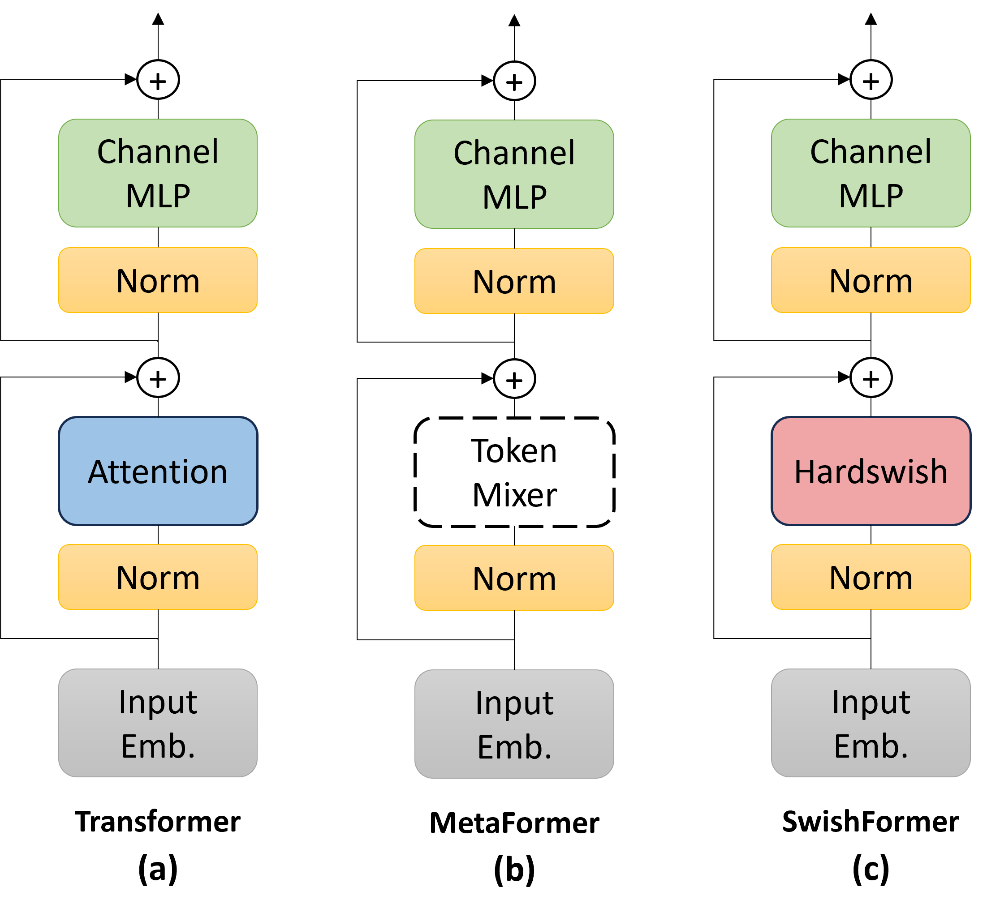

DIGIT-Based Tactile Gripper
A custom-designed robotic gripper integrated with a DIGIT tactile sensor for non-destructive fruit firmness estimation.

DIGIT sensor-based gripper palpates an avocado or kiwi after grasping. Three consecutive images are fed as input to the proposed SwishFormer model that generate distinct feature representations. These features are then concatenated together and are used in predicting the fruit firmness using random forest. The predicted firmness are then compared with the standard fruit firmness thresholds to determine their ripeness levels.
A custom-designed robotic gripper integrated with a DIGIT tactile sensor for non-destructive fruit firmness estimation.
(a) Original Transformer architecture, (b) Metaformer: A general architecture abstracted from the transformer architecture, (c) SwishFormer: The proposed architecture in which HardSwish activation function is used as a token mixer.
Some random samples from the proposed dataset. The left column in each pair represents the RGB image of kiwi and avocado fruits, while the right column shows their corresponding VBTS palpation scans obtained using a DIGIT. The RGB images lack visual cues related to fruit ripeness, whereas the tactile palpation encode valuable palpation information for firmness estimation. The dataset also includes ground truth firmness values measured using a penetrometer, serving as a benchmark for future works. The total size of the dataset is 4,760 sets of frames along with penetrometer readings.

Performance evaluation of the proposed model with state-of-the-art architectures in terms of MSE, RMSE, R2, and MAE. Bold indicates the best performance, while the second-best performance is underlined.
@article{mohsan2025swishformer,
title={SwishFormer for robust firmness and ripeness recognition of fruits using visual tactile imagery},
author={Mohsan, Mashood M and Hasanen, Basma B and Hassan, Taimur and Din, Muhayy Ud and Werghi, Naoufel and Seneviratne, Lakmal and Hussain, Irfan},
journal={Postharvest Biology and Technology},
volume={225},
pages={113487},
year={2025},
publisher={Elsevier}
}